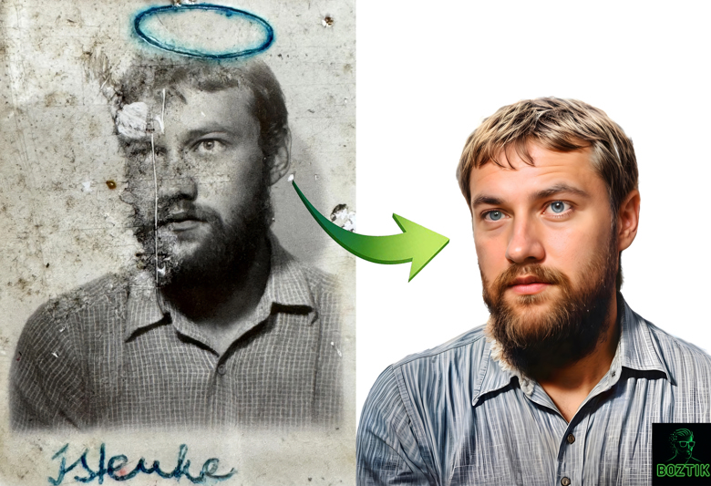
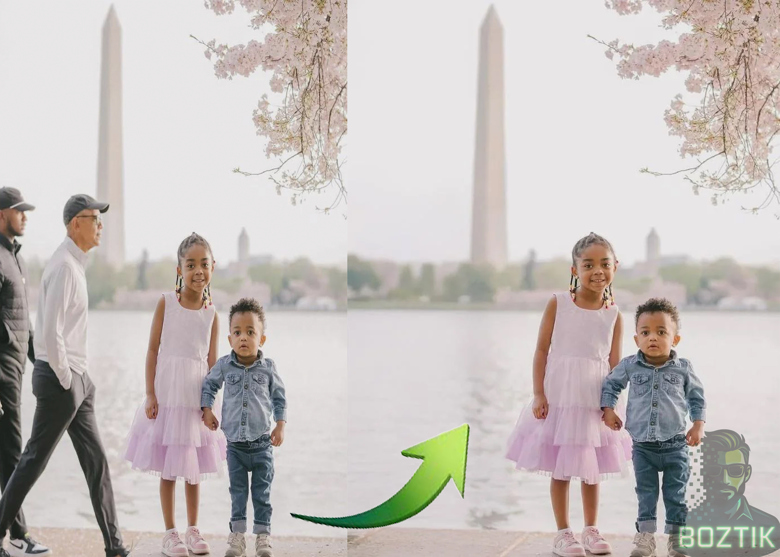
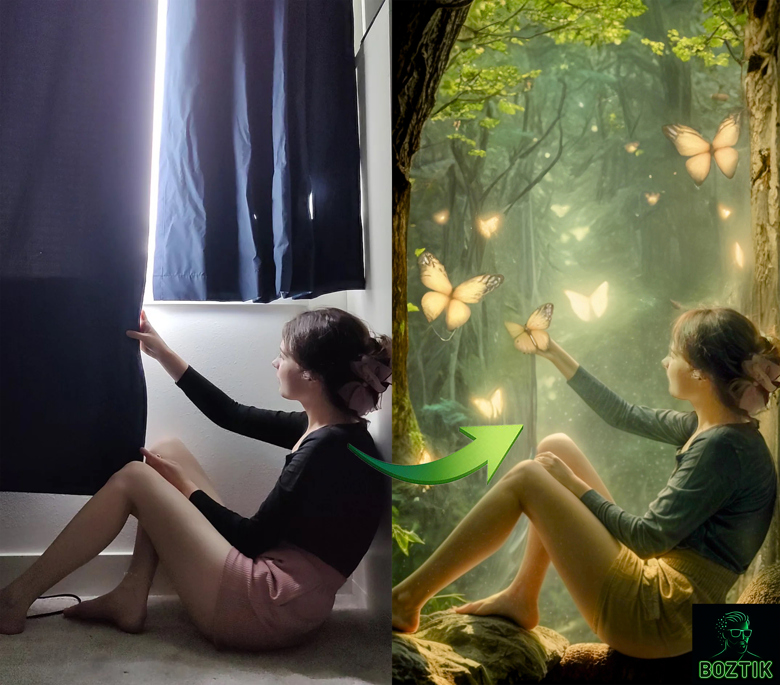

Creative Work
Professional Photoshop editing, photo restoration, object removal, and creative image manipulation — done by hand, one image at a time.
Photoshop editing. Restoration. Creative image work.
Boztik is an independent creative brand — professional photo restoration and editing, creative image manipulation, free browser tools, and practical guides, all built by the same person.
Creative work, tools, guides, and the Creative Toolkit — all part of the wider Boztik brand.
Professional Photoshop editing, photo restoration, object removal, and creative image manipulation — done by hand, one image at a time.
Practical browser-first tools for creative workflows, from image analysis to AI creative assistance.
Useful notes for photographers, designers, and creators — written from doing the work, not generic templates.
The Boztik browser extension and creative utilities — one product within the wider Boztik ecosystem.
Whichever you need, it comes from the same place: real creative and technical craft.
Real editing work, delivered securely — restoration, retouching, and enhancement for photos that matter.
Image Inspector, color and font tools, and an AI Creative Assistant — free, in your browser, for Chrome and Edge.
A small sample of the restoration, retouching, and creative compositing behind Boztik — real client and personal projects, not stock examples.

A torn, water-damaged print restored and colorized into a natural family portrait.

An unplanned passerby removed with lighting and texture matched so the fix is invisible.

An everyday photo reimagined as a fantasy forest with full compositing and color grading.
Technical analysis, metadata, and deep image insights.
Identify typography and font styles on any page.
Improved palette extraction and color picking.
Capture selected areas or full visible pages instantly.
These lightweight experiences are built to be useful on their own while naturally encouraging visitors to try the Boztik extension.
Analyze your own images directly in your browser with resolution, palette, metadata, and creative editing tips.
Launch ToolGet instant guidance for Photoshop, Firefly prompts, workflow improvements, and image-editing decisions.
Open AssistantPrompt Lab, EXIF Viewer, print-size calculations, and social media sizing helpers will be added over time.
Stay UpdatedInstall the extension in seconds and bring professional creative analysis to your everyday browsing.
Install from the official Chrome Web Store and keep everything automatically updated.
Install from Microsoft Edge Add-ons and enjoy the same fast, polished experience.
Boztik Creative Toolkit is proudly featured on trusted software directories and marketplaces, making it easier for creators to discover our tools.
Discover Boztik Creative Toolkit on LaunchZone and support the project by visiting our listing.
View ListingBoztik is currently available on the most trusted Chromium-based browsers, with more support on the way.
Additional Chromium-based browser support is actively being expanded.
Fast performance, thoughtful UI, and dependable updates are built into every release so the experience feels polished from day one.
Version 3.1 evolves Boztik into a comprehensive toolkit for modern web-based creativity.
The ultimate image intelligence tool. Inspect technical metadata, dimensions, color profiles, and file properties directly in your browser.
Inspect dimensions, aspect ratio, and quality signals instantly before you download or share.
Pick colors and extract polished palettes from any website or image with advanced color tools.
Instantly identify fonts, weights, and styles. Explore the typography of any webpage with the Font Inspector.
High-quality captures of selected areas or full visible pages for easy inspiration gathering.
Collect useful information and investigate creative elements from across the web.
Locate higher-quality sources, original files, and related versions in moments.
Save the highest-quality asset available without leaving your current webpage.
Boztik stays lightweight, fast, and responsive so your editing flow never slows down.
Built with a privacy-first approach. Your analysis and data remain local to your browser.
Enjoy the full power of the Creative Toolkit without subscriptions or hidden costs.
Get instant creative help directly inside Boztik Creative Toolkit for photography, design, marketing, and digital art.
The AI Creative Assistant helps creators analyze images, explain composition, suggest edits, share photography advice, recommend design improvements, brainstorm concepts, and provide workflow guidance without breaking focus.
Understand framing, lighting, and visual balance with friendly, practical guidance.
Explore styling choices, improve clarity, and refine visual direction quickly.
Turn ideas into sharper concepts and smoother production workflows.
Practical notes on restoration, retouching, and editing — written from real editing work, not generic SEO templates.
What actually gets fixed in a damaged photograph — scratches, fading, missing detail — and why over-restoring is its own mistake.
Read the guide → RetouchingWhy object removal is really a reconstruction problem, and what makes a removal look invisible instead of obvious.
Read the guide →Boztik started with hands-on photo editing and restoration work — the toolkit grew out of the exact problems that work kept creating.
After editing thousands of images for clients, the real pain points became clear: repetitive analysis, slow asset review, and constant tab-switching.
Boztik brings the tools creators use most into one calm, lightweight browser experience.
Whether you work in photography, digital art, design, marketing, or content production, Boztik helps you stay focused and make smarter decisions faster.
Boztik's tools are free to use, and the creative work behind them is independent. If either has helped you, consider supporting future development and helping keep it going.
Get real editing work done, or install the free toolkit and try it yourself — either way, it starts here.